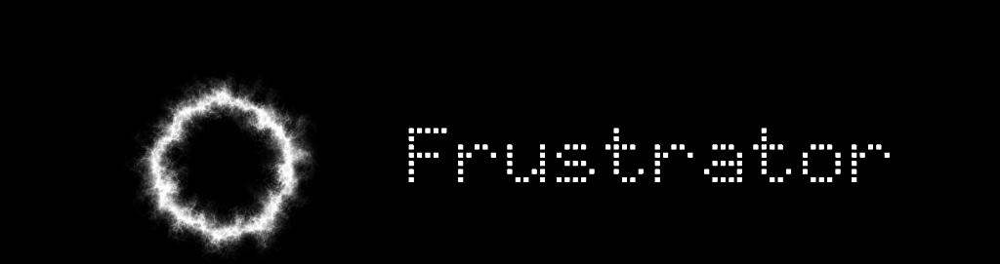

Frustrator — место, где можно отдохнуть от контроля и от погони за целью. Фрустрация рассматривается здесь не как выгорание и беспомощность, а как расслабление и принятие. Приложение предлагает отказаться от попыток контроля и стать наблюдателем или партнёром.
Ваши действия могут что-то изменить, а могут и нет. Иногда последствия приходят с задержкой — и уже непонятно, что именно их вызвало. Это не баг, это и есть суть.
Если вы ничего не будете делать — всё равно можете насладиться музыкой. Можно просто не делать ничего — frustrator справится сам. Этот вариант не хуже и не лучше. Вас никто не будет оценивать или осуждать.
техническая сторона
Приложение представляет собой шесть аудиомодулей, каждый из которых имеет от шести до одиннадцати настраиваемых параметров. При запуске приложения каждый из параметров устанавливается в произвольном значении. Перемещая кольца дыма по экрану, вы вслепую распределяете значения параметров — где-то значение становится больше, где-то меньше. При каждом открытии приложения зоны, отвечающие за разные параметры модулей, перемешиваются и получают случайные значения. Можно просто исследовать — это тоже приятно.
Если хочется поддержать независимый проект — можно угостить меня кофе.
ПОДДЕРЖАТЬ НА KO-FI